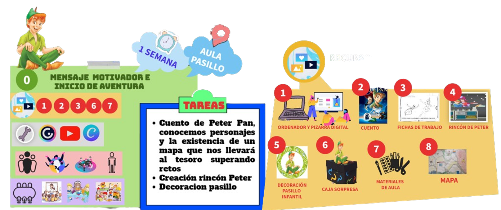

ELEMENTOS CURRICULARES
OBJETIVOS
Los principales objetivos de esta primera actividad son los siguientes:
- Conocer el cuento de Peter Pan
- Descubrir los personajes de este cuento
- Motivar a correr aventuras con el personaje pues nos ofrece la posibilidad de conseguir un mapa al superar distintos retos que nos llevará a un tesoro
- Extraer los conocimientos previos en relación al cuento
ORGANIZACIÓN ESPACIO-TEMPORAL Y RECURSOS
Puedes consultar en la Línea temporal si tienes alguna duda de los símbolos.

EVALUACIÓN
Instrumentos de evaluación
- Observación sistemática de las actividades
- Anecdotario semanal
- Realización de cuestiones comprensivas sobre el cuento en asamblea
CRITERIOS DE EVALUACIÓN
Área de Crecimiento en Armonía (ACA):
4.1. Participar con iniciativa en juegos y actividades colectivas relacionándose con otras personas con actitudes de afecto y empatía, respetando los distintos ritmos individuales y favoreciendo la inclusión y la cohesión de grupo.
Área de Descubrimento y Exploración de Entorno (ADEE):
2.1. Afrontar retos o problemas planificando secuencias de actividades, mostrando interés, iniciativa y actitud colaborativa
Ärea de Comunicación y Representación de la Realidad (ACRR):
1.4. Interactuar de manera virtual, familiarizándose con el uso de diferentes medios y herramientas digitales
2.3. Reproducir textos orales sencillos de la literatura infantil andaluza o tradición oral con actitud respetuosa.
3.3. Evocar y expresar espontáneamente ideas a través del relato oral en un contexto de respeto hacia las diferencias individuales.
3.4. Elaborar creaciones plásticas, explorando y utilizando diferentes técnicas y materiales nuevos o reciclados y participando activamente en el trabajo en grupo cuando se precise.
5.3. Participar en actividades de aproximación a la literatura infantil, tanto de carácter individual, como en contextos dialógicos y participativos, descubriendo, explorando y apreciando la belleza del lenguaje literario.


{kind=link}
{kind=link}
{kind=link}
{kind=link}
{kind=link}
{kind=link}
{kind=link}
{kind=link}